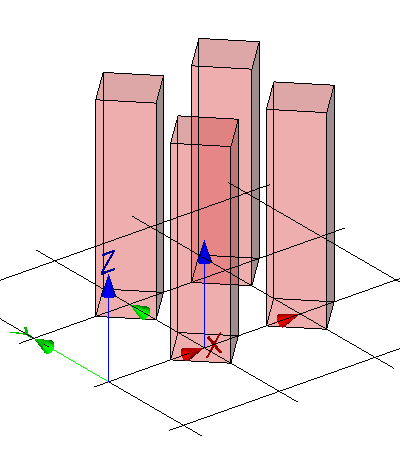

Link to this page
Link to this pageThe mapped representation can be generated by a mapped item placing multiple mapped representation with or without Cartesian transformations.
|
 |
The representation map, being a simple block, is inserted four times as a mapped item for the building element proxy within its local object coordinate system. Each item is transformed by a rotation by 45' in xy plane and by a non-uniform scaling with x-scale=0.5, y-scale=0.5 and z-scale=1.0. The items are translated within the local object coordinate system to be placed in a grid of 1m x 1m. See Figure E10. |
|
Figure E10 — Mapped representation with multiple items |